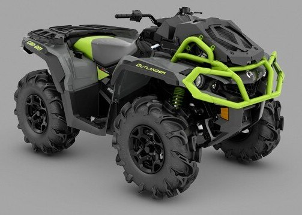

У 1973 році під керівництвом американського інженера на ім’я Гар Робінсон і колишнім чемпіоном світу по мотокросу
Джефом Смітом, працюючих з командою гонщиків з Каліфорнії, почали робити мотокросові мотоцикли і ендуро-велосипеди
Can-Am з використанням двигунів, що надаються австрійською компанією Rotax, іншою дочірньою компанією Bombardier.
Мотоцикли завоювали золоту, срібну і бронзову медалі на Міжнародному чемпіонаті “Шість днів прокату”, Олімпіади
позашляхових мотоциклів. Наступного року компанія взяла участь у національному чемпіонаті з Can-Am гонщиками
Гэрі Джонс, Марті Тріпс і Джиммі Элліс, отримавши перше, друге і третє місця. Мотоцикли придбали репутацію завдяки
своїй високій потужності. Проте незабаром після запуску Can-Am, корпорація Bombardier змінила свої пріоритети від
Recreational Products змістилися до диверсифікації у галузі устаткування, а потім, через декілька років, в авіабудування.
В результаті, інвестиції в нові моделі Can-Am істотно знижені.
У 1983 році Bombardier ліцензувало бренд Can-Am, проте в 1987 році виробництво припинилося. У 2006 році Bombardier Recreational
Products знову запускає Can-Am бренд з його квадроциклами (ATV – all terrain vehicles) і мотовсюдиходами (SSV – side-by-side vehicles)
Can-Am на даний момент має 3 моделі квадроциклів: Outlander, Renegade, DS і 3 моделі мотовсюдиходів: Maverick, Commander і Traxter.
Всі моделі оснащуються двигунами австрійської компанії Rotax, лебідками компанії Warn, електропідсилювачем руля (DPS), системою
повного приводу і системою блокування переднього диференціалу Visco-Lok QE, системою безпеки з цифровим кодуванням (D.E.S.S.™),
багатофункціональною 3D цифровою панеллю приладів, безступінчатим варіатором з cистемою швидкого спрацьовування (QRS) з
посиленою вентиляцією, L / H / N / R / P.
Моделі Outlander оснащують двигунами V-twin 450сс(38 к.с.), 570сс(48 к.с.), 650сс(62 к.с.), 850сс(78 к.с.), 1000сс(89 і 91 к.с.).
Кожна модель доступна в двох комплектаціях: XT та XT-P. Can-Am Outlander 1000 LTD також має встановлений GPS навігатор Garmin Montana
650T і пневмопідвіску. Комплектація XMR призначена для суворого бездоріжжя, доступна в трьох варіантах двигунів 570сс, 650сс, 1000сс.
Незадежно від вибору двигунів, всі моделі XMR обладнані виносом радіатора та шноркелів. Renegade оснащують двигунами 570сс, 850сс, 1000сс.
Також доступний варіант Renegade XMR 1000.
З 2015 року виробляють шестиколісні квадроцикли Can-Am Outlander 6x6 з двигунами 650сс та 1000сс.

У 1973 році під керівництвом американського інженера на ім’я Гар Робінсон і колишнім чемпіоном світу по мотокросу Джефом Смітом,
працюючих з командою гонщиків з Каліфорнії, почали робити мотокросові мотоцикли і ендуро-велосипеди Can-Am з використанням двигунів,
що надаються австрійською компанією Rotax, іншою дочірньою компанією Bombardier.
Мотоцикли завоювали золоту, срібну і бронзову медалі на Міжнародному чемпіонаті “Шість днів прокату”, Олімпіади позашляхових мотоциклів.
Наступного року компанія взяла участь у національному чемпіонаті з Can-Am гонщиками Гэрі Джонс, Марті Тріпс і Джиммі Элліс, отримавши перше
, друге і третє місця. Мотоцикли придбали репутацію завдяки своїй високій потужності. Проте незабаром після запуску Can-Am, корпорація Bombardier
змінила свої пріоритети від Recreational Products змістилися до диверсифікації у галузі устаткування, а потім, через декілька років, в авіабудування. В результаті, інвестиції в нові моделі Can-Am істотно знижені.
У 1983 році Bombardier ліцензувало бренд Can-Am, проте в 1987 році виробництво припинилося. У 2006 році Bombardier Recreational Products знову
запускає Can-Am бренд з його квадроциклами (ATV – all terrain vehicles) і мотовсюдиходами (SSV – side-by-side vehicles)
Can-Am на даний момент має 3 моделі квадроциклів: Outlander, Renegade, DS і 3 моделі мотовсюдиходів: Maverick, Commander і Traxter. Всі моделі
оснащуються двигунами австрійської компанії Rotax, лебідками компанії Warn, електропідсилювачем руля (DPS), системою повного приводу і системою
блокування переднього диференціалу Visco-Lok QE, системою безпеки з цифровим кодуванням (D.E.S.S.™), багатофункціональною 3D цифровою панеллю
приладів, безступінчатим варіатором з cистемою швидкого спрацьовування (QRS) з посиленою вентиляцією, L / H / N / R / P.
Моделі Outlander оснащують двигунами V-twin 450сс(38 к.с.), 570сс(48 к.с.), 650сс(62 к.с.), 850сс(78 к.с.), 1000сс(89 і 91 к.с.). Кожна модель
доступна в двох комплектаціях: XT та XT-P. Can-Am Outlander 1000 LTD також має встановлений GPS навігатор Garmin Montana 650T і пневмопідвіску.
Комплектація XMR призначена для суворого бездоріжжя, доступна в трьох варіантах двигунів 570сс, 650сс, 1000сс. Незадежно від вибору двигунів,
всі моделі XMR обладнані виносом радіатора та шноркелів. Renegade оснащують двигунами 570сс, 850сс, 1000сс. Також доступний варіант Renegade XMR
1000.
З 2015 року виробляють шестиколісні квадроцикли Can-Am Outlander 6x6 з двигунами 650сс та 1000сс.